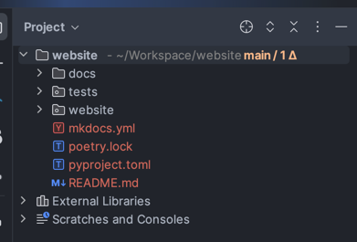

This has been published on medium: here
Have you been in pythonland and haven't touched a front-end language in a while and would like build a super simple website? Not in the mood to download any javacript adjacetn languages or ruby? Feel like hosting it in your own AWS bucket? You've come to the right place.
In wanting to redo my website and I looked into github pages https://pages.github.com/ simple enough. Yes. It got up to installing Ruby for Jekyll, the data engineer in me didn't want to do that. At Neoval we use a python package mkdocs for some super simple docs, so this is just me doing what I know, which is python-mkdocs and basic AWS.
Requisets
(All the commands are for mac users) - AWS account, AWS CLI installed - Python
In the time what is your brand
Resources
Deploy
brew install awscli
